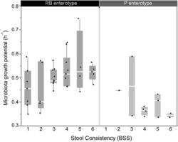

Companion website · Gut 2016
Stool consistency is strongly associated with gut microbiota richness and composition, enterotypes and bacterial growth rates
Gut 65(1):57–62 (2016) · doi:10.1136/gutjnl-2015-309618
16S rRNA gene sequencing data, QIIME OTU tables, phylogenetic trees, mapping file and metadata accompanying the study. (* equal contribution)

Data
The archive above bundles all files except the 16S sequencing data.
| File | Description | Size | |
|---|---|---|---|
| Gut_Vandeputte_etal_QIIME_close_ref_otutable.biom.zip | Qiime OTU-table closed reference OTU picking | 322 KB | Download |
| Gut_Vandeputte_etal_QIIME_de_novo_otutable.biom.zip | Qiime OTU-table de novo OTU picking | 469 KB | Download |
| Gut_Vandeputte_etal_QIIME_close_ref_phylogenetictree.tree.zip | Qiime phylogenetic tree closed reference OTU picking | 928 KB | Download |
| Gut_Vandeputte_etal_QIIME_de_novo_phylogenetictree.tree.zip | Qiime phylogenetic tree de novo OTU picking | 555 KB | Download |
| Gut_Vandeputte_etal_QIIME_mappingfile.txt | Qiime mapping file | 2 KB | Download |
| Gut_Vandeputte_etal_metadata.xlsx | Metadata | 41 KB | Download |
| Gut_Vandeputte_etal_16S_data.tar.gz | Merged and quality trimmed 16S sequencing data | 82.6 MB | Download |
How to cite
If you use these data, please cite the original publication:
Vandeputte D, Falony G, Vieira-Silva S, Tito RY, Joossens M, Raes J. Stool consistency is strongly associated with gut microbiota richness and composition, enterotypes and bacterial growth rates. Gut 65(1):57–62 (2016). https://doi.org/10.1136/gutjnl-2015-309618
@article{vandeputte2016stool,
title = {{Stool consistency is strongly associated with gut microbiota richness and composition, enterotypes and bacterial growth rates}},
author = {Vandeputte, D. and Falony, G. and Vieira-Silva, S. and Tito, R. Y. and Joossens, M. and Raes, J.},
journal = {Gut},
year = {2016},
volume = {65},
number = {1},
pages = {57--62},
doi = {10.1136/gutjnl-2015-309618}
}